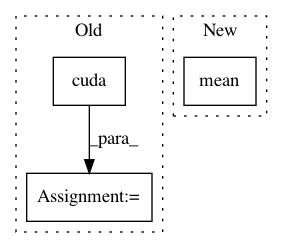

e7a02b6293100e21ef15870fd0f9069beaae5290,train.py,,,#,21
Before Change
z = Variable(data)
if torch.cuda.is_available():
z = z.cuda()
fake_label = fake_label.cuda()
fake_img = netG(z)
fake_out = netD(fake_img)
d_loss_fake = discriminator_criterion(fake_out, fake_label)
fake_scores = fake_out.data.sum()
d_loss = d_loss_real + d_loss_fake
After Change
fake_out = netD(fake_img)
fake_scores = fake_out.data.sum()
d_loss = - torch.mean(torch.log(real_out) + torch.log(1 - fake_out))
// bp and optimize
optimizerD.zero_grad()
d_loss.backward(retain_graph=True)
In pattern: SUPERPATTERN
Frequency: 3
Non-data size: 3
Instances
Project Name: leftthomas/SRGAN
Commit Name: e7a02b6293100e21ef15870fd0f9069beaae5290
Time: 2017-12-02
Author: leftthomas@qq.com
File Name: train.py
Class Name:
Method Name:
Project Name: rusty1s/pytorch_geometric
Commit Name: b44364811b14bde01d84554624a9bffa0e4976e3
Time: 2018-03-07
Author: matthias.fey@tu-dortmund.de
File Name: examples/cora_gcn.py
Class Name:
Method Name:
Project Name: eriklindernoren/PyTorch-YOLOv3
Commit Name: 689f38a8c10fddebe32a036461d26f94a04d7fca
Time: 2019-04-25
Author: eriklindernoren@live.se
File Name: models.py
Class Name: YOLOLayer
Method Name: forward